Deseo portal fixes
Matched before and after captures from the browser portal. Local Anna and Marek fixtures.
Display date: 5 October 2026, 10:00 Europe/Warsaw. Auth and backend clocks use real time.
Today
Personal content before tasks. Clear event ranges and due dates.

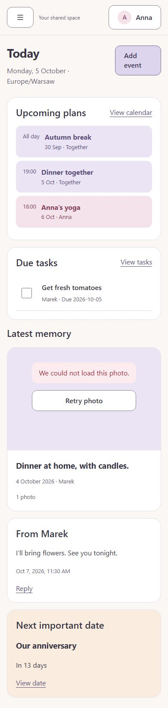

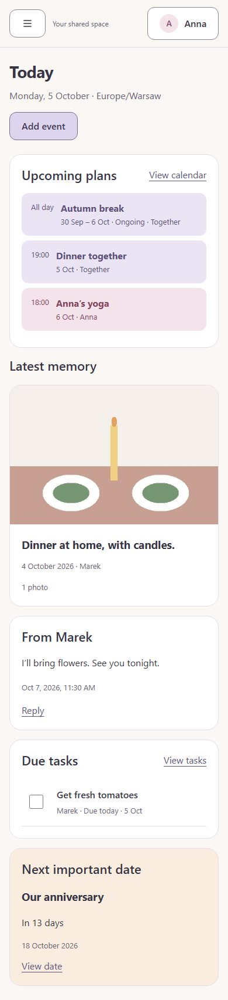
Desktop captures

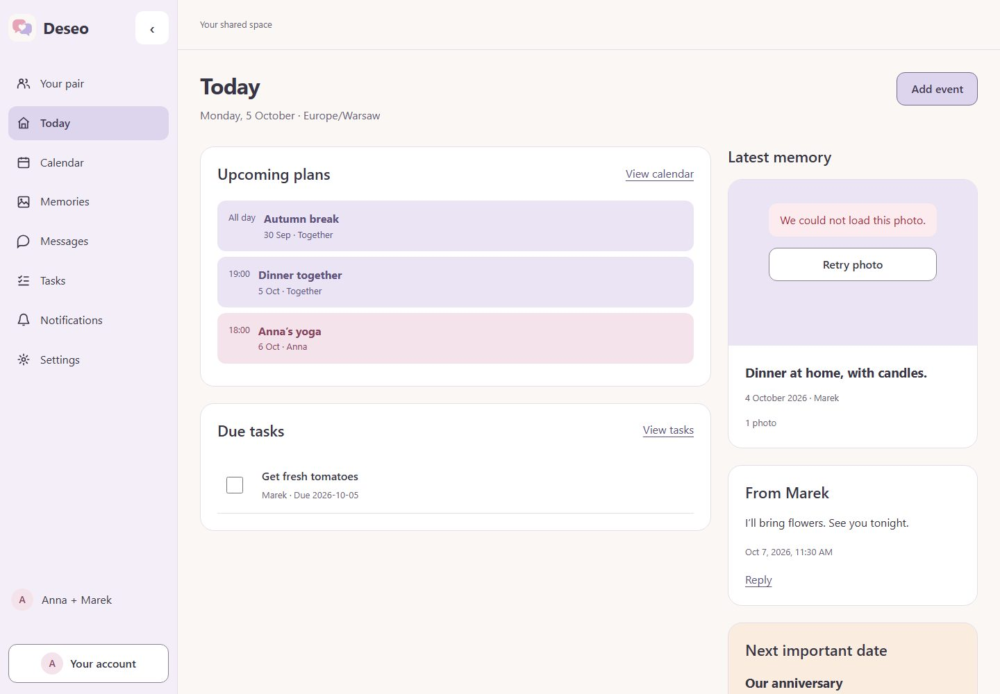

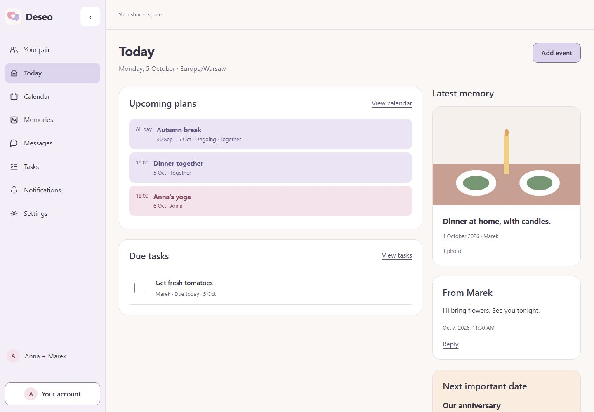
Event validation
Errors beside their fields. Optional details stay grouped.

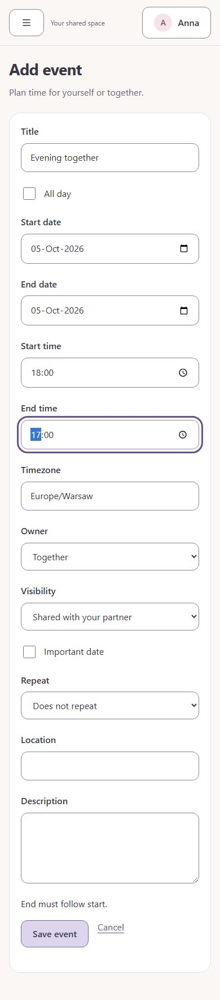

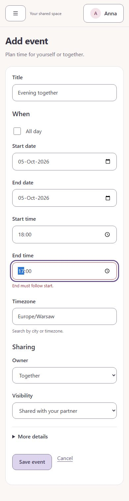
Desktop captures

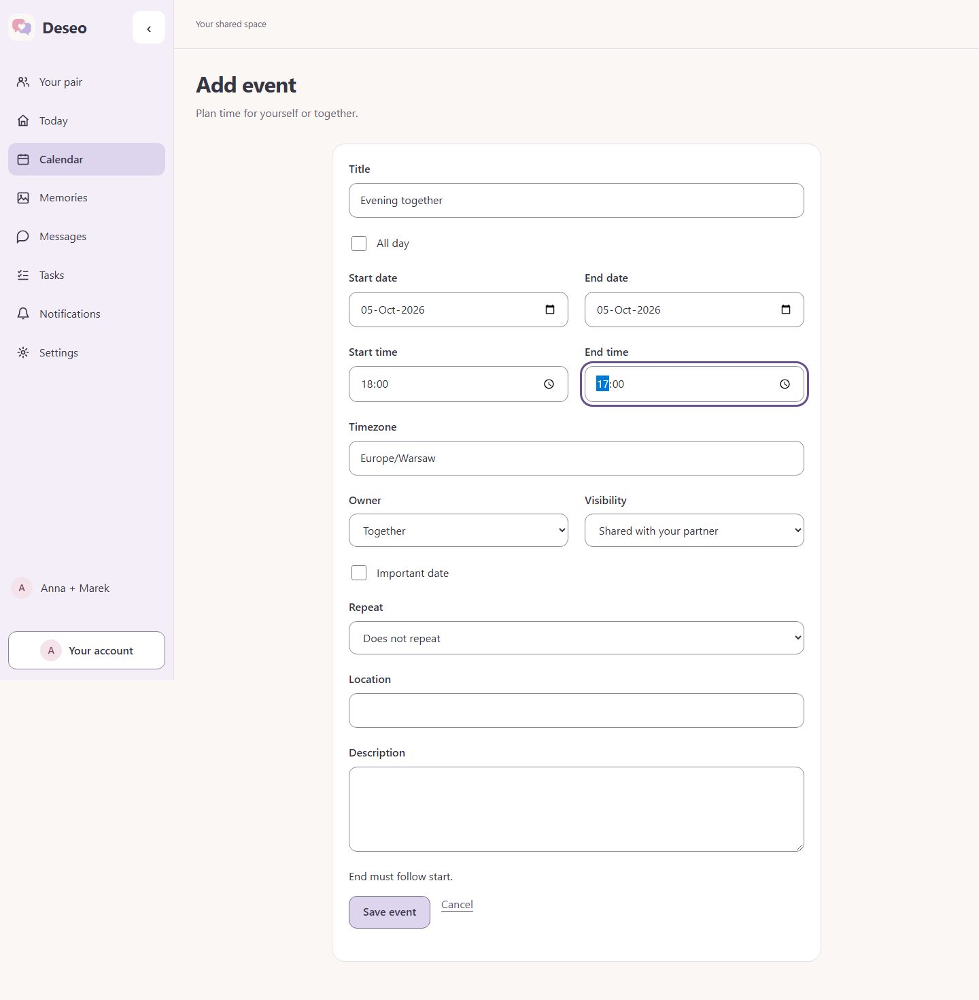

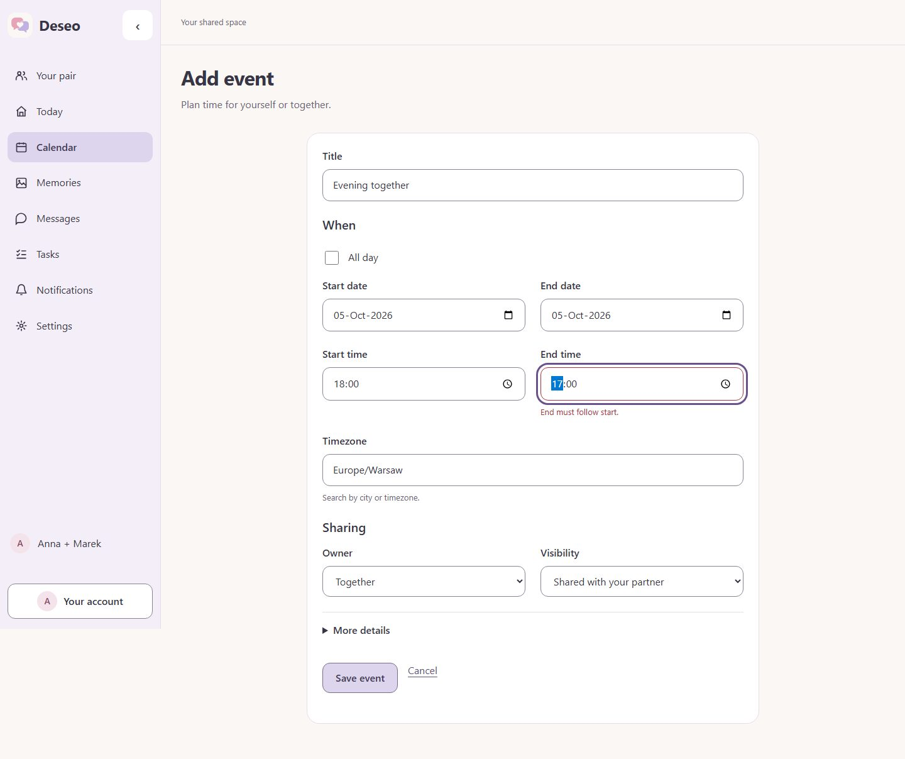
Messages
One Actions control for each own message.

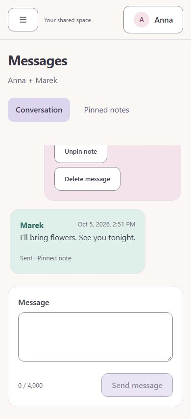

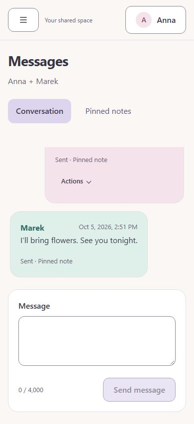
Desktop captures

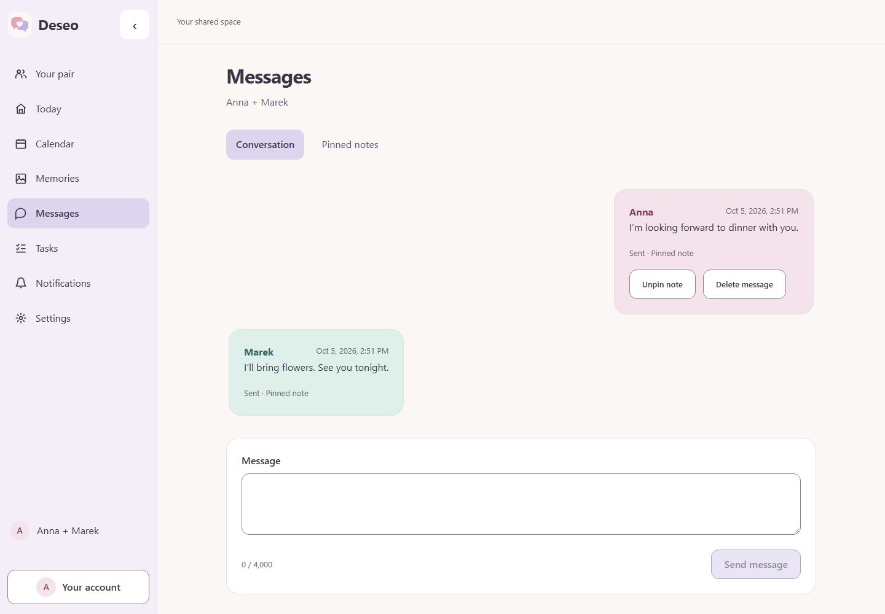

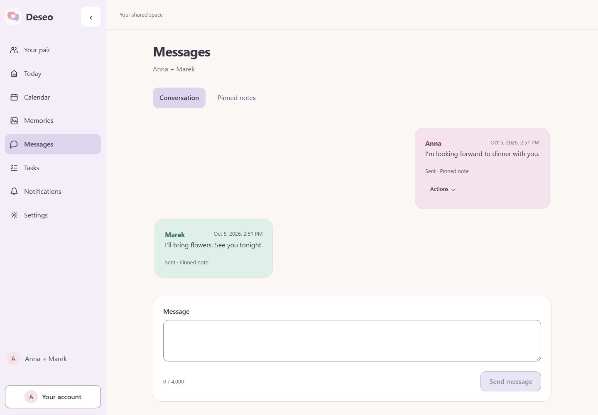
Empty Today

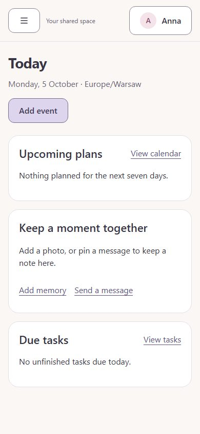

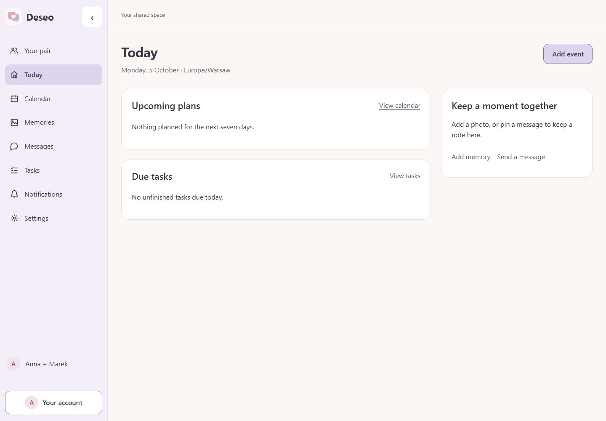
Calendar

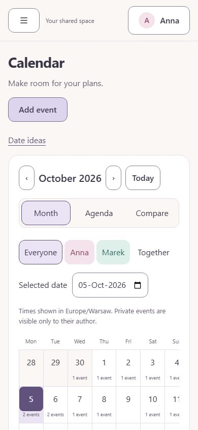

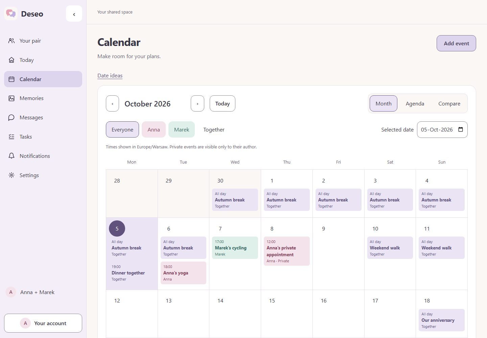
Settings

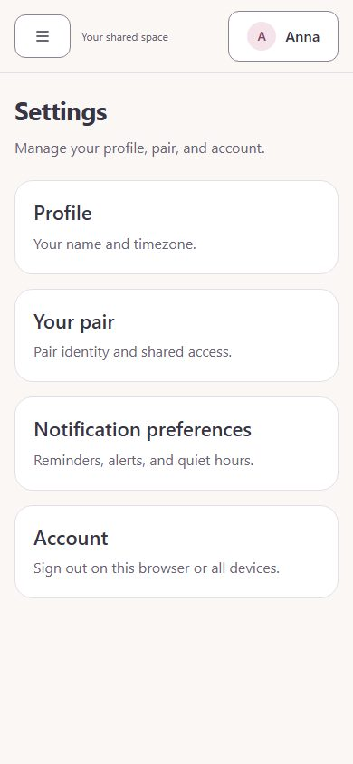

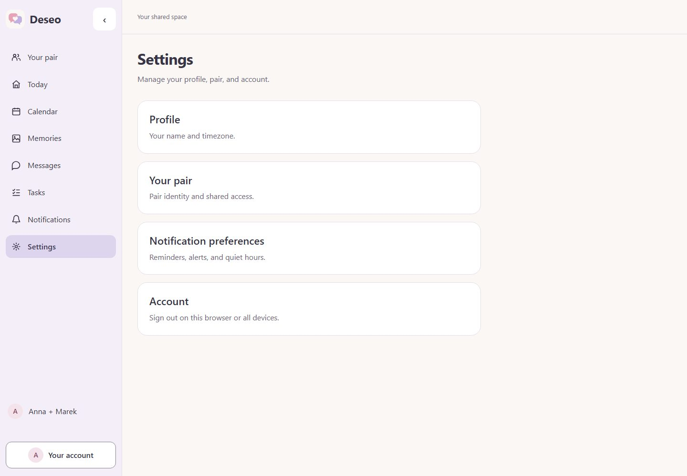
Capture setup
The private preview uses a local test bridge for the shared backend origin. JPEG headers follow verified fixture metadata.
Product code contains no bridge. Open an image to inspect its full size.